Gazebo：三维物理仿真平台
ROS机器人开发，机器人当然是主角，如果我们手边没有实物机器人，怎么办呢？没问题，机器人三维物理仿真平台Gazebo，了解一下。
Gazebo仿真平台
介绍
Gazebo是ROS系统中最为常用的三维物理仿真平台，支持动力学引擎，可以实现高质量的图形渲染，不仅可以模拟机器人及周边环境，还可以加入摩擦力、弹性系数等物理属性。
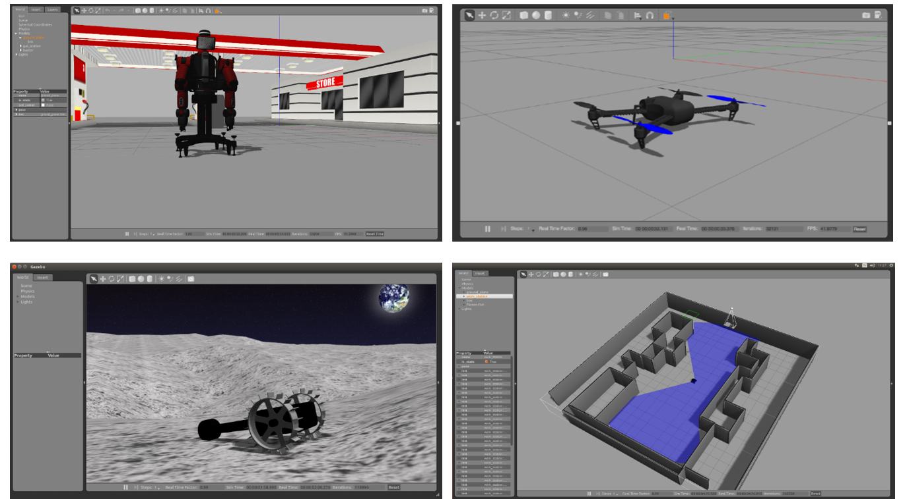
比如我们要开发一个火星车，那就可以在Gazebo中模拟火星表面的环境，再比如我们做无人机，续航和限飞都导致我们没有办法频繁用实物做实验，此时不妨使用Gazebo先做仿真，等算法开发的差不多了，再部署到实物上来运行。
所以类似Gazebo这样的仿真平台，可以帮助我们验证机器人算法、优化机器人设计、测试机器人场景应用，为机器人开发提供更多可能。
安装
Gazebo如何使用呢？我们不妨先把它给跑起来，互相认识一下。
为了确保系统中已经完整安装了Gazebo相关的功能包，大家可以通过这样一个命令，简单直接的把和gazebo相关的包都给装上：
运行
通过这句命令就可以启动啦：
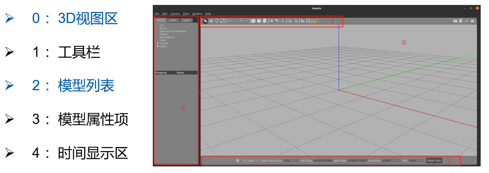
Attention
为保证模型顺利加载，请将离线模型下载并放置到~/.gazebo/models路径下
，下载链接如下：https://github.com/osrf/gazebo_models
认识了Gazebo，接下来是不是该试试机器人仿真啦？
大家还记得之前课程中，我们设计的移动机器人模型么？我们一起尝试把它放到Gazebo中，还要控制它在仿真环境中运动。
XACRO机器人模型优化
我们之前设计好的URDF模型此时还不能直接放到Gazebo中，需要我们做一些优化。这里给大家介绍一个URDF文件格式的升级版本——XACRO文件。
同样也是对机器人URDF模型的创建，XACRO文件加入了更多编程化的实现方法，可以让模型创建更友好。
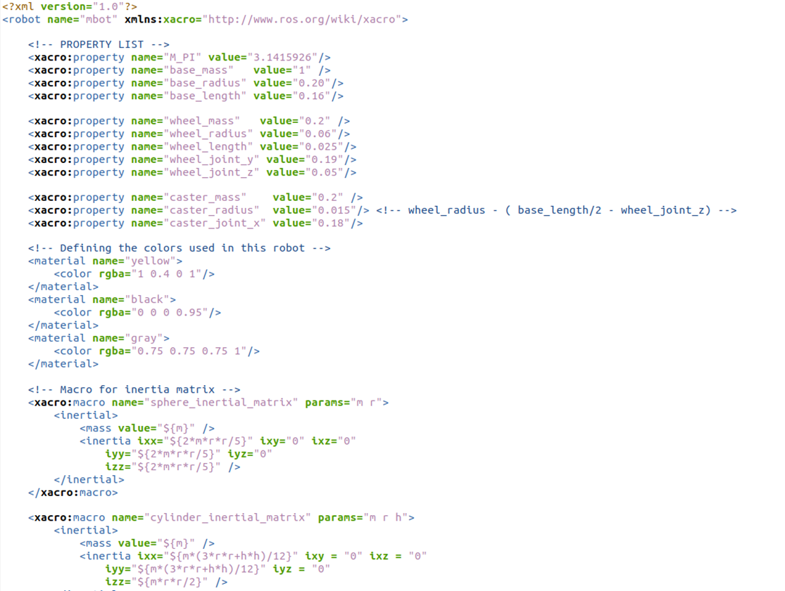
比如：
-
宏定义，一个小车有4个轮子，每个轮子都一样，我们就没必要创建4个一样的link，像函数定义一样，做一个可重复使用的模块就可以了。
-
文件包含，复杂机器人的模型文件可能会很长，为了切分不同的模块，比如底盘、传感器，我们还可以把不同模块的模型放置在不同的文件中，然后再用一个总体文件做包含调用。
-
可编程接口，比如在XACRO模型文件中，定义一些常量，描述机器人的尺寸，定义一些变量，在调用宏定义的时候传递数据，还可以在模型中做数据计算，甚至加入条件语句，比如你的机器人叫A，就有摄像头，如果叫B，就没有摄像头。
XACRO建模过程就像写代码一样，功能更为丰富了。
接下来，我们就通过XACRO文件对移动机器人的模型做一下优化，大家先要使用这句命令安装必要的功能包。
以下是一些常用的XACRO文件语法，大家了解下。
常量定义
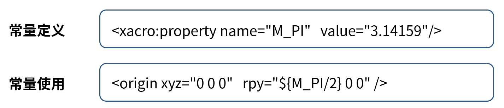
<xacro:property>标签用来定义一些常量，比如这样定义一个PI的常量名为“M_PI”，值为“3.14159”，在调用的时候，通过$加大括号，里边就可以使用定义好的常量了。
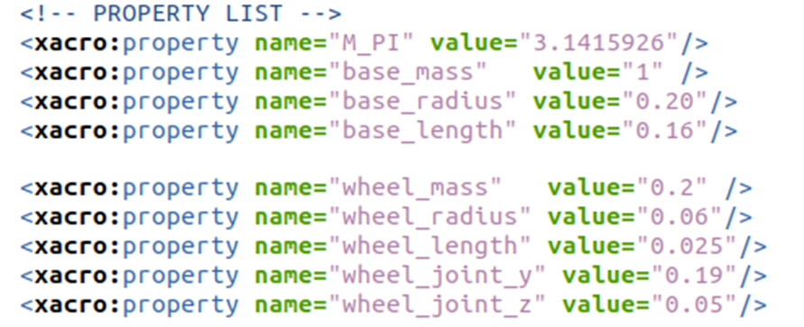
针对原本移动机器人的URDF文件，我们就可以把底盘的质量、尺寸，轮子的质量、尺寸、安装位置，这些不会变化的数据，都通过常量定义，未来需要修改的时候也很方便，就不需要在模型文件中一行一行找了。
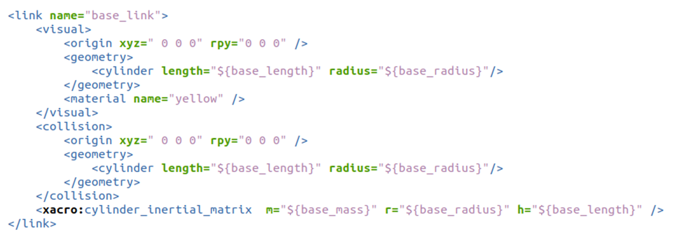
数学计算
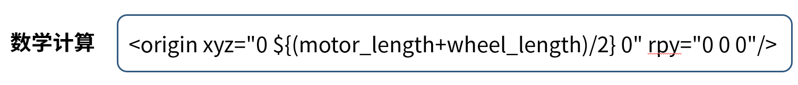
如果需要做数学计算，同样是在“${}”中进行，比如某一个位置，我们可以通过这两个常量做运算得到，就加入了加法和除法运算。
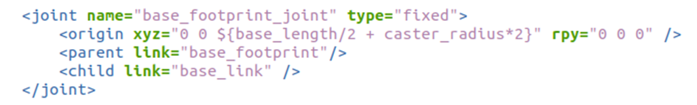
在移动机器人的模型中，很多有相对关系的数据，我们尽量都改成公式计算，如果直接写结果的数值，未来修改的时候，可能根本想不起来这个数据是怎么来的。
Info
所有数学运算都会转换成浮点数进行，以保证运算精度
宏定义
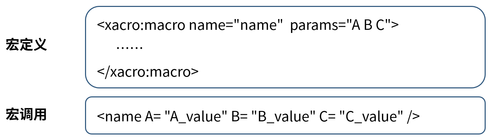
机器人的轮子我们也做成宏定义，定义方式是通过这个<xacro:macro>标签描述的，还可以像函数一样，设置里边会用到的一些参数，比如这里的A、B、C。
当需要使用这个宏的时候，就可以像这样，通过宏名字的标签，来调用，同时要记得把几个参数设置好。
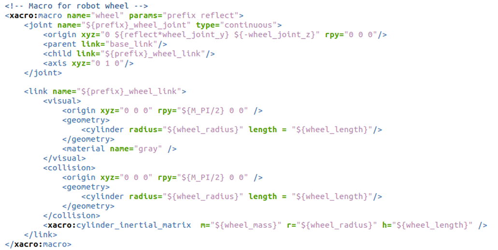
比如在模型中，轮子的宏定义是这样的，包含了link描述和joint关节设置，link的名称和关节的位置，是通过输入的参数来区分的，在使用的时候，通过这两句调用，两个轮子就出现了。
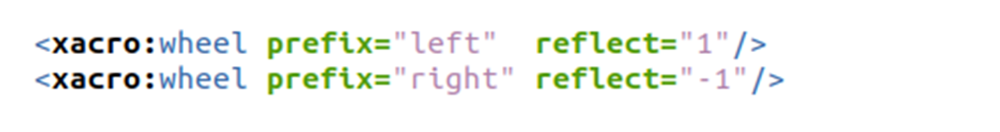
这里的1和-1，是设置关节位置的，刚好是一个镜像关系。
文件包含

宏定义是可以嵌套的，于是我们把机器人的底盘也做成了一个宏，然后使用另外一个模型文件，对底盘宏定义的文件做了一个包含，然后再调用。
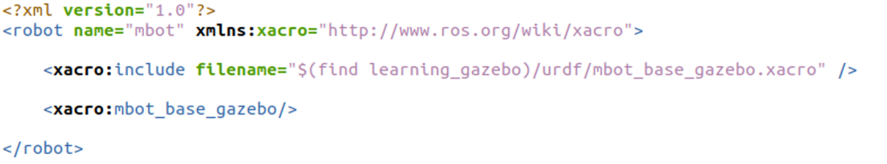
这种流程是不是似曾相识，很像C语言中的include文件包含，然后再去调用里边的某些函数。
到这里为止，仿真使用的模型优化还没有结束，接下来我们还得加入一些仿真必备的模块和参数。
机器人仿真模型配置
完善物理参数
第一步是确保每一个link都有惯性参数和碰撞属性，因为Gazebo是物理仿真平台，必要的物理参数是一定需要的。
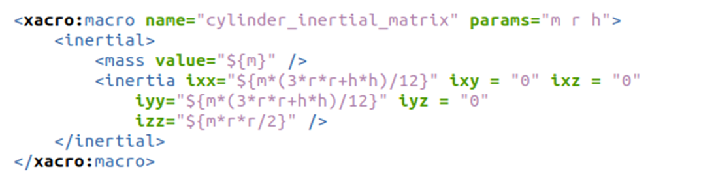
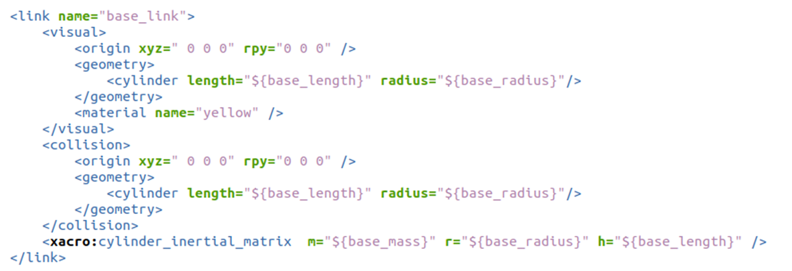
添加Gazebo标签
第二步是为link添加gazebo标签，主要是为了可以在gazebo中渲染每一个link的颜色，因为URDF中的颜色系统和gazebo中的不同，所以得做一步这样的冗余配置。
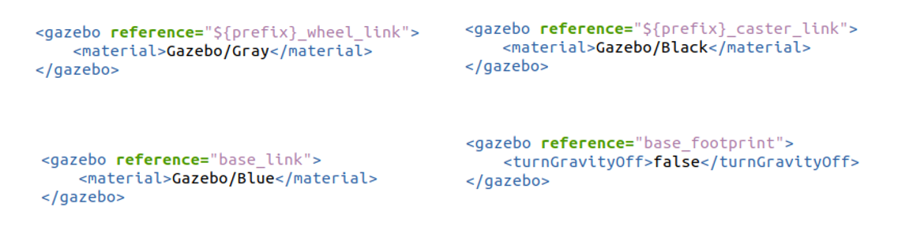
配置传动装置
第三步是要给运动的joint配置传动装置，可以理解为仿真了一个电机。
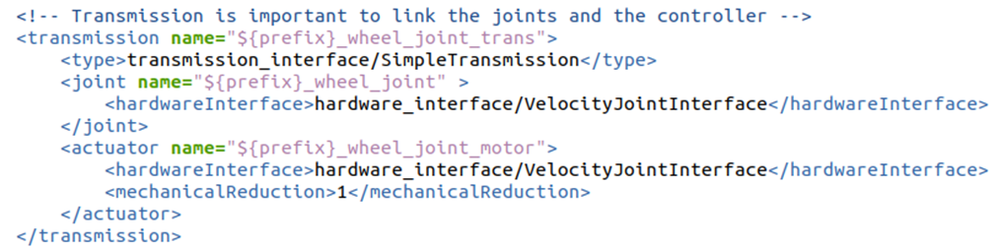
添加控制器插件
第四步，要添加一个gazebo的控制器插件，小车是差速控制的，那就添加差速控制器插件，这样在不同角度下两个电机的速度分配，就可以交给控制器插件来完成了。
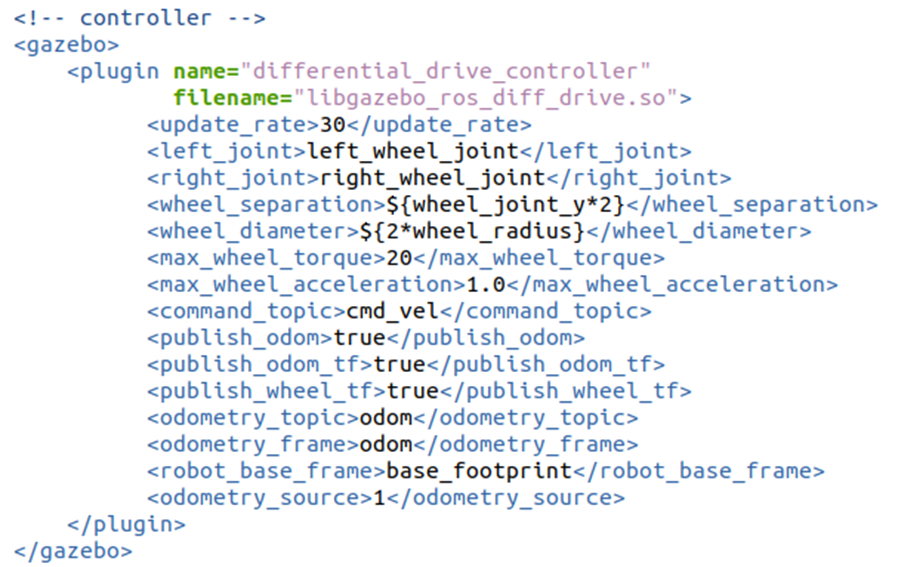
构建仿真环境
接下来就考虑如何把模型加载到Gazebo中了，需要用到一个gazebo提供的功能节点spwan_entity。
learning_gazebo/launch/load_urdf_into_gazebo.launch.py
import os
from ament_index_python.packages import get_package_share_directory
from launch import LaunchDescription
from launch.actions import IncludeLaunchDescription
from launch.launch_description_sources import PythonLaunchDescriptionSource
from launch_ros.actions import Node
def generate_launch_description():
# Include the robot_state_publisher launch file, provided by our own package. Force sim time to be enabled
# !!! MAKE SURE YOU SET THE PACKAGE NAME CORRECTLY !!!
package_name='learning_gazebo' #<--- CHANGE ME
world_file_path = 'worlds/neighborhood.world'
pkg_path = os.path.join(get_package_share_directory(package_name))
world_path = os.path.join(pkg_path, world_file_path)
# Pose where we want to spawn the robot
spawn_x_val = '0.0'
spawn_y_val = '0.0'
spawn_z_val = '0.0'
spawn_yaw_val = '0.0'
mbot = IncludeLaunchDescription(
PythonLaunchDescriptionSource([os.path.join(
get_package_share_directory(package_name),'launch','mbot.launch.py'
)]), launch_arguments={'use_sim_time': 'true', 'world':world_path}.items()
)
# Include the Gazebo launch file, provided by the gazebo_ros package
gazebo = IncludeLaunchDescription(
PythonLaunchDescriptionSource([os.path.join(
get_package_share_directory('gazebo_ros'), 'launch', 'gazebo.launch.py')]),
)
# Run the spawner node from the gazebo_ros package. The entity name doesn't really matter if you only have a single robot.
spawn_entity = Node(package='gazebo_ros', executable='spawn_entity.py',
arguments=['-topic', 'robot_description',
'-entity', 'mbot',
'-x', spawn_x_val,
'-y', spawn_y_val,
'-z', spawn_z_val,
'-Y', spawn_yaw_val],
output='screen')
# Launch them all!
return LaunchDescription([
mbot,
gazebo,
spawn_entity,
])
机器人运动仿真
万事俱备，接下来就是见证奇迹的时刻。
我们需要运行两句命令，第一句启动仿真环境，第二句启动键盘控制节点。
$ ros2 launch learning_gazebo load_urdf_into_gazebo.launch.py
$ ros2 run teleop_twist_keyboard teleop_twist_keyboard
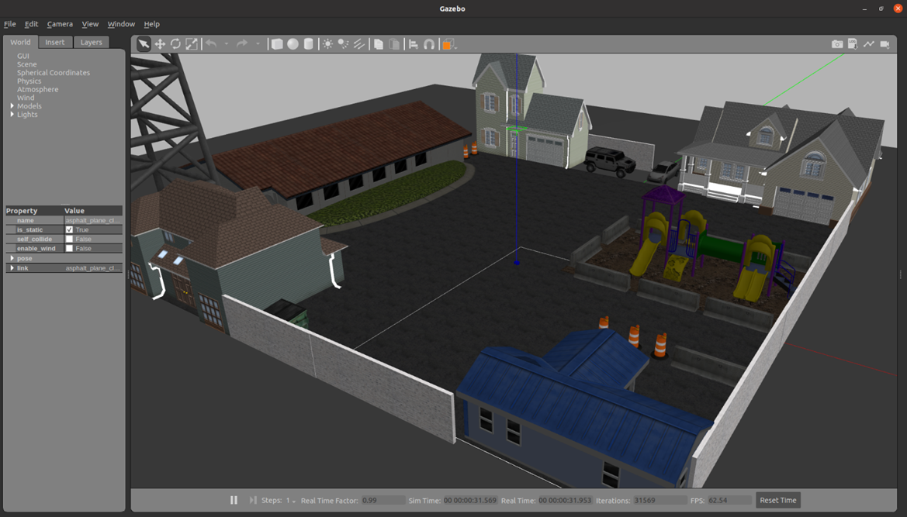
Attention
虚拟机中运行时需要关闭硬件加速：echo " export SVGA_VGPU10=0" >> ~/.bashrc
通过键盘上的“i、j、，、l”几个按键，就可以控制机器人前后左右运动啦。
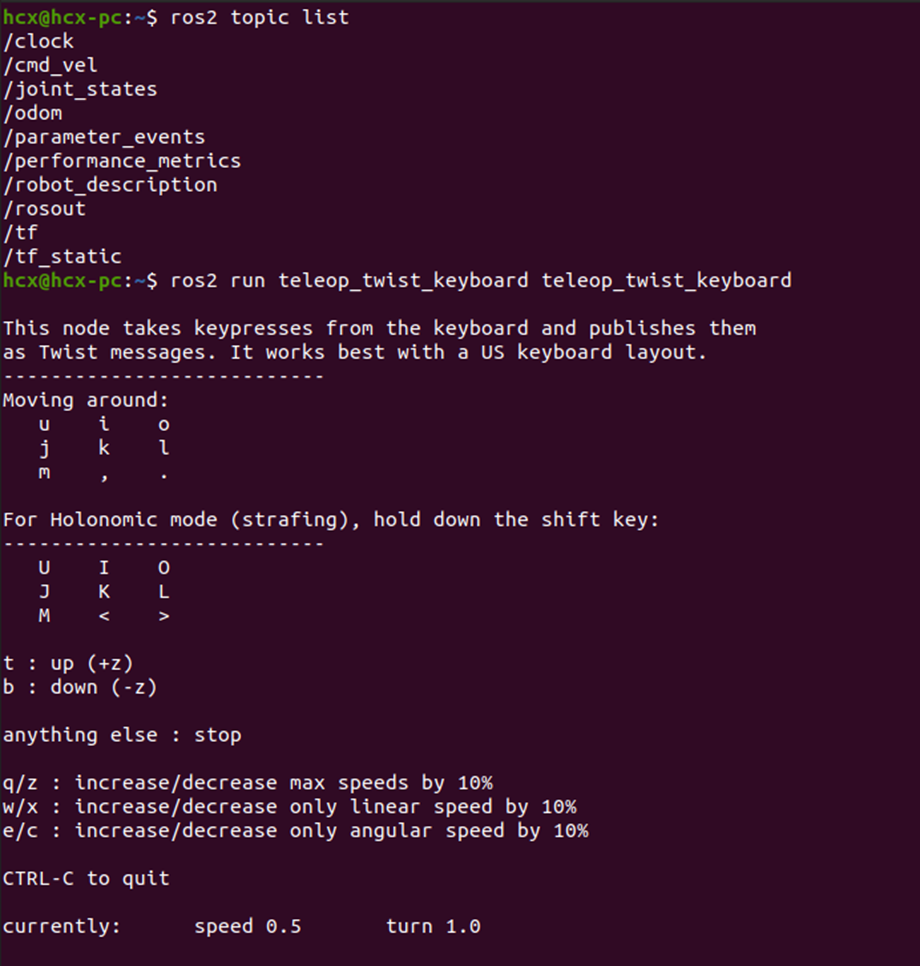
整个仿真有点像控制小海龟的过程，不过此时的机器人和仿真环境，已经比小海龟复杂很多了。
以上就是Gazebo机器人的仿真的基本流程。
Ignition：下一代Gazebo
随着技术的进步，Gazebo仿真平台也在不断迭代，新一代的Gazebo命名为Ignition，从渲染效果和仿真流畅度上都有较大的变化，我们不妨也来试一下。
$ sudo apt install ros-humble-ros-ign
$ ros2 launch ros_ign_gazebo_demos rgbd_camera_bridge.launch.py
运行成功后，会打开Ignition的仿真界面和Rviz上位机，我们可以看到RGBD相机仿真后发布的图像数据。
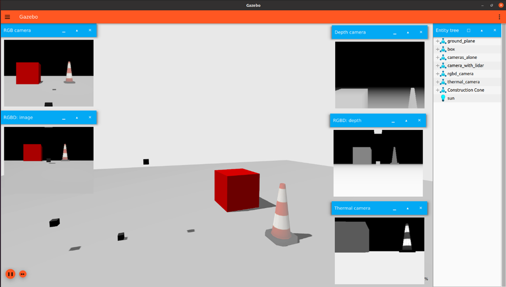
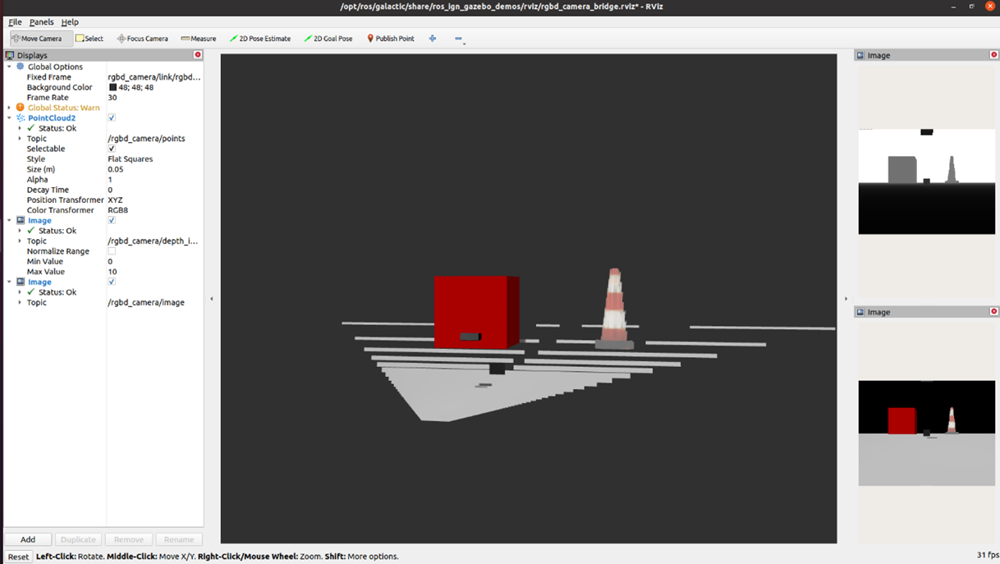
更多新版本仿真器的信息，大家也可以参考官方网站:
附录：机器人完整模型
- learning_gazebo/urdf/mbot_gazebo.xacro
<?xml version="1.0"?>
<robot name="mbot" xmlns:xacro="http://www.ros.org/wiki/xacro">
<xacro:include filename="$(find learning_gazebo)/urdf/mbot_base_gazebo.xacro" />
<xacro:mbot_base_gazebo/>
</robot>
- learning_gazebo/urdf/mbot_base_gazebo.xacro
<?xml version="1.0"?>
<robot name="mbot" xmlns:xacro="http://www.ros.org/wiki/xacro">
<!-- PROPERTY LIST -->
<xacro:property name="M_PI" value="3.1415926"/>
<xacro:property name="base_mass" value="1" />
<xacro:property name="base_radius" value="0.20"/>
<xacro:property name="base_length" value="0.16"/>
<xacro:property name="wheel_mass" value="0.2" />
<xacro:property name="wheel_radius" value="0.06"/>
<xacro:property name="wheel_length" value="0.025"/>
<xacro:property name="wheel_joint_y" value="0.19"/>
<xacro:property name="wheel_joint_z" value="0.05"/>
<xacro:property name="caster_mass" value="0.2" />
<xacro:property name="caster_radius" value="0.015"/> <!-- wheel_radius - ( base_length/2 - wheel_joint_z) -->
<xacro:property name="caster_joint_x" value="0.18"/>
<!-- Defining the colors used in this robot -->
<material name="yellow">
<color rgba="1 0.4 0 1"/>
</material>
<material name="black">
<color rgba="0 0 0 0.95"/>
</material>
<material name="gray">
<color rgba="0.75 0.75 0.75 1"/>
</material>
<!-- Macro for inertia matrix -->
<xacro:macro name="sphere_inertial_matrix" params="m r">
<inertial>
<mass value="${m}" />
<inertia ixx="${2*m*r*r/5}" ixy="0" ixz="0"
iyy="${2*m*r*r/5}" iyz="0"
izz="${2*m*r*r/5}" />
</inertial>
</xacro:macro>
<xacro:macro name="cylinder_inertial_matrix" params="m r h">
<inertial>
<mass value="${m}" />
<inertia ixx="${m*(3*r*r+h*h)/12}" ixy = "0" ixz = "0"
iyy="${m*(3*r*r+h*h)/12}" iyz = "0"
izz="${m*r*r/2}" />
</inertial>
</xacro:macro>
<!-- Macro for robot wheel -->
<xacro:macro name="wheel" params="prefix reflect">
<joint name="${prefix}_wheel_joint" type="continuous">
<origin xyz="0 ${reflect*wheel_joint_y} ${-wheel_joint_z}" rpy="0 0 0"/>
<parent link="base_link"/>
<child link="${prefix}_wheel_link"/>
<axis xyz="0 1 0"/>
</joint>
<link name="${prefix}_wheel_link">
<visual>
<origin xyz="0 0 0" rpy="${M_PI/2} 0 0" />
<geometry>
<cylinder radius="${wheel_radius}" length = "${wheel_length}"/>
</geometry>
<material name="gray" />
</visual>
<collision>
<origin xyz="0 0 0" rpy="${M_PI/2} 0 0" />
<geometry>
<cylinder radius="${wheel_radius}" length = "${wheel_length}"/>
</geometry>
</collision>
<xacro:cylinder_inertial_matrix m="${wheel_mass}" r="${wheel_radius}" h="${wheel_length}" />
</link>
<gazebo reference="${prefix}_wheel_link">
<material>Gazebo/Gray</material>
</gazebo>
<!-- Transmission is important to link the joints and the controller -->
<transmission name="${prefix}_wheel_joint_trans">
<type>transmission_interface/SimpleTransmission</type>
<joint name="${prefix}_wheel_joint" >
<hardwareInterface>hardware_interface/VelocityJointInterface</hardwareInterface>
</joint>
<actuator name="${prefix}_wheel_joint_motor">
<hardwareInterface>hardware_interface/VelocityJointInterface</hardwareInterface>
<mechanicalReduction>1</mechanicalReduction>
</actuator>
</transmission>
</xacro:macro>
<!-- Macro for robot caster -->
<xacro:macro name="caster" params="prefix reflect">
<joint name="${prefix}_caster_joint" type="fixed">
<origin xyz="${reflect*caster_joint_x} 0 ${-(base_length/2 + caster_radius)}" rpy="0 0 0"/>
<parent link="base_link"/>
<child link="${prefix}_caster_link"/>
</joint>
<link name="${prefix}_caster_link">
<visual>
<origin xyz="0 0 0" rpy="0 0 0"/>
<geometry>
<sphere radius="${caster_radius}" />
</geometry>
<material name="black" />
</visual>
<collision>
<origin xyz="0 0 0" rpy="0 0 0"/>
<geometry>
<sphere radius="${caster_radius}" />
</geometry>
</collision>
<xacro:sphere_inertial_matrix m="${caster_mass}" r="${caster_radius}" />
</link>
<gazebo reference="${prefix}_caster_link">
<material>Gazebo/Black</material>
</gazebo>
</xacro:macro>
<xacro:macro name="mbot_base_gazebo">
<link name="base_footprint">
<visual>
<origin xyz="0 0 0" rpy="0 0 0" />
<geometry>
<box size="0.001 0.001 0.001" />
</geometry>
</visual>
</link>
<gazebo reference="base_footprint">
<turnGravityOff>false</turnGravityOff>
</gazebo>
<joint name="base_footprint_joint" type="fixed">
<origin xyz="0 0 ${base_length/2 + caster_radius*2}" rpy="0 0 0" />
<parent link="base_footprint"/>
<child link="base_link" />
</joint>
<link name="base_link">
<visual>
<origin xyz=" 0 0 0" rpy="0 0 0" />
<geometry>
<cylinder length="${base_length}" radius="${base_radius}"/>
</geometry>
<material name="yellow" />
</visual>
<collision>
<origin xyz=" 0 0 0" rpy="0 0 0" />
<geometry>
<cylinder length="${base_length}" radius="${base_radius}"/>
</geometry>
</collision>
<xacro:cylinder_inertial_matrix m="${base_mass}" r="${base_radius}" h="${base_length}" />
</link>
<gazebo reference="base_link">
<material>Gazebo/Blue</material>
</gazebo>
<xacro:wheel prefix="left" reflect="1"/>
<xacro:wheel prefix="right" reflect="-1"/>
<xacro:caster prefix="front" reflect="-1"/>
<xacro:caster prefix="back" reflect="1"/>
<!-- controller -->
<gazebo>
<plugin name="differential_drive_controller"
filename="libgazebo_ros_diff_drive.so">
<update_rate>30</update_rate>
<left_joint>left_wheel_joint</left_joint>
<right_joint>right_wheel_joint</right_joint>
<wheel_separation>${wheel_joint_y*2}</wheel_separation>
<wheel_diameter>${2*wheel_radius}</wheel_diameter>
<max_wheel_torque>20</max_wheel_torque>
<max_wheel_acceleration>1.0</max_wheel_acceleration>
<command_topic>cmd_vel</command_topic>
<publish_odom>true</publish_odom>
<publish_odom_tf>true</publish_odom_tf>
<publish_wheel_tf>true</publish_wheel_tf>
<odometry_topic>odom</odometry_topic>
<odometry_frame>odom</odometry_frame>
<robot_base_frame>base_footprint</robot_base_frame>
<odometry_source>1</odometry_source>
</plugin>
</gazebo>
</xacro:macro>
</robot>